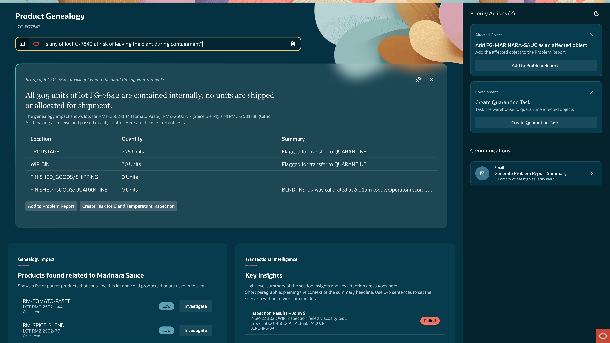
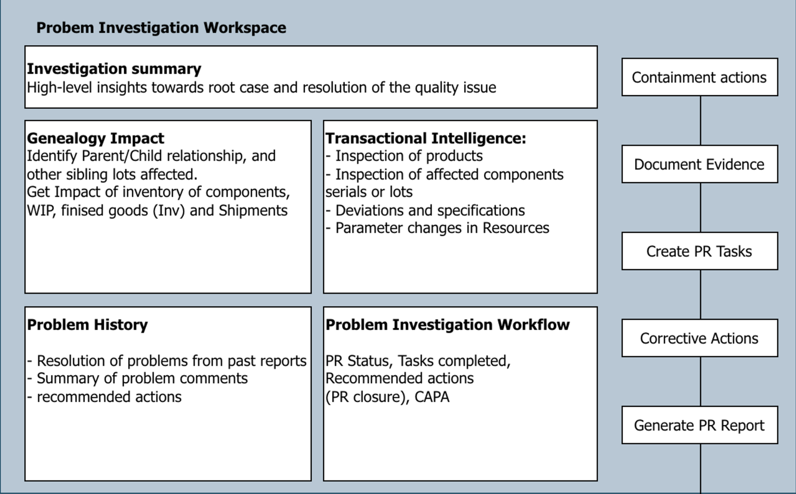
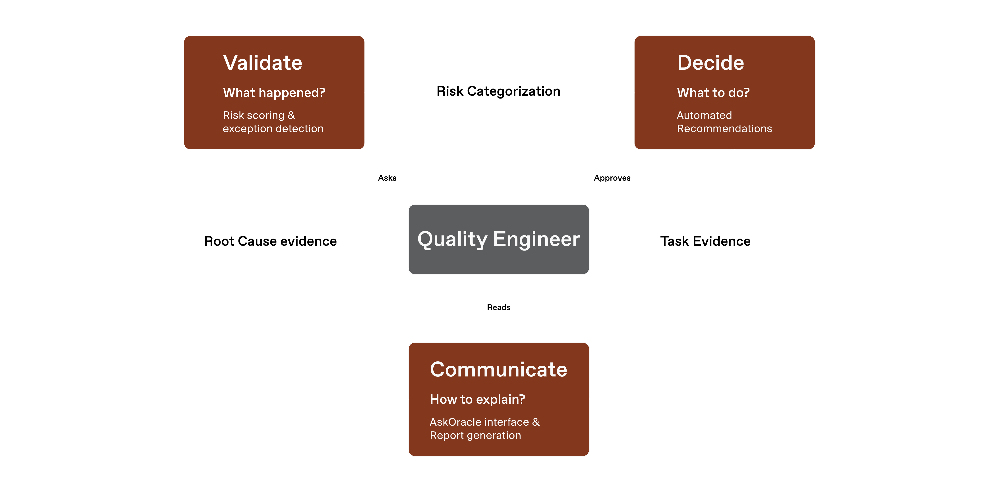
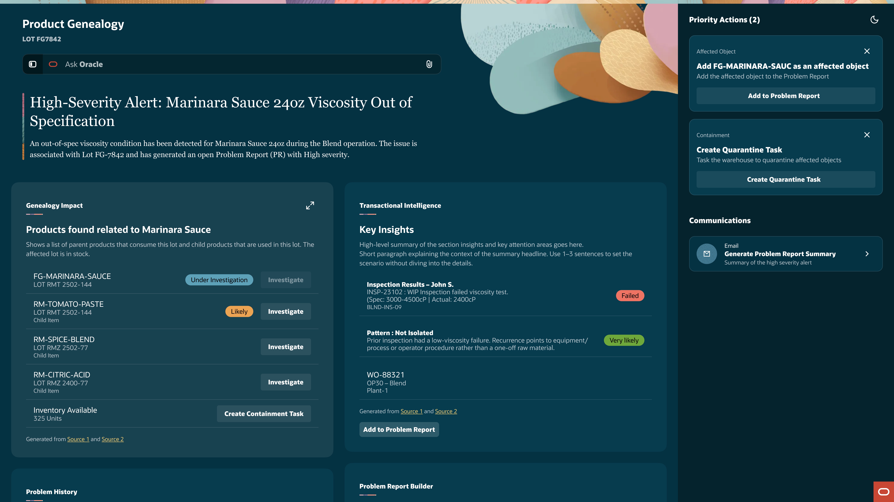
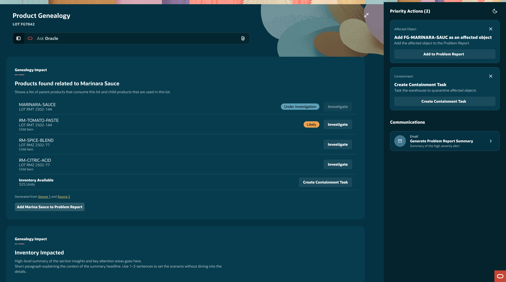
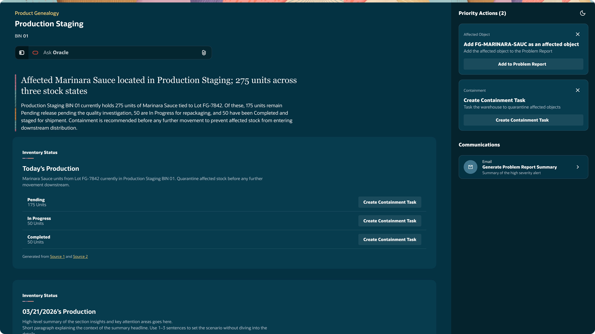
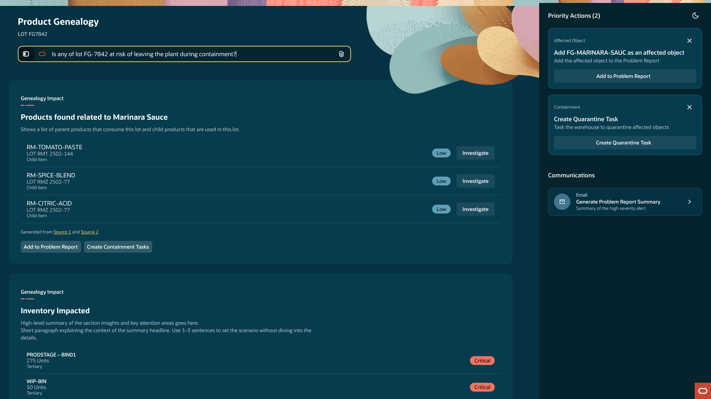
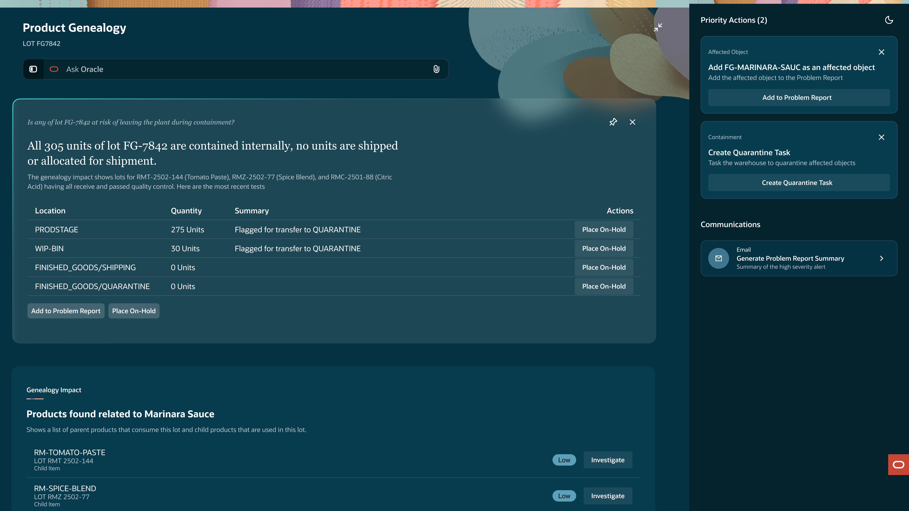

Project Overview
Challenge
Give Quality Engineers a single workspace to investigate, contain, and document quality issues. Replace the manual process of stitching data across fragmented Oracle modules with an agentic system that surfaces evidence, recommends actions, and produces an audit-ready Problem Report.
My Role
Solo designer embedded with engineering and a PM from the project's early stages. A broad page template existed that defined the core layout and LLM interaction pattern. The mandate: there's a gap in our quality investigation tools, use this template to close it. No specification on how. The use-case-specific interactions, advisor behaviors, and investigation workflow were all net new.
What we delivered
In one month, the project went from a stakeholder mandate and an empty page template to a fully defined agentic investigation workspace with three specialized AI advisors, a node-based navigation model for context switching across product genealogies, and an interaction framework that makes AI reasoning auditable at every layer.

Where we started
Functional Design Overview

What the process looked like
Mapped the investigation process
Defined the advisor architectureIterated the workspace interactions
Resolved the design directionPhase 1 – Problem Framing
Phase 1 was about understanding the problem deeply enough to define an effective solution. That meant learning the quality engineer's current process, discovering that investigations are cyclical rather than linear, and organizing the system architecture around four investigative questions that would become the foundation for everything designed in Phase 2.
Understanding the RequirementsLearned the quality engineer's current process and identified where the real gap was.
The PM had documented the requirements and the quality engineer's current process. The gap wasn't a lack of tools — Oracle's products contained the data quality engineers needed. The problem was navigating them. Engineers had to search across isolated, fractured modules with very little help identifying where to look. The containers were in front of them but finding the right information inside them was a needle-in-the-haystack effort.
The output of this entire process is a Problem Report — an auditable artifact that validates what the engineer found, what was affected, and what actions were taken. Every claim in the report needs to be correct and traceable. The stakes aren't just operational — they're regulatory.
- Where does the current process break down most — in finding the data, interpreting it, or connecting it across systems?
- What does a quality engineer actually navigate today to build a Problem Report?
- The data existed. The tools existed. What didn't exist was a way to move through them that matched how an investigation actually unfolds.
Mapping the Investigation FlowRevealed that investigations are cyclical, not linear — each finding opens new questions.
Mapping the full investigation process revealed something the requirements didn't capture: Problem Reports aren't constructed linearly. They're cyclical. One suspect leads to another — a flagged Marinara Sauce lot might trace to sour Tomato Paste, an incorrect Citric Acid measurement, or bad tomatoes at the source. Each finding opens new questions. What other lots used those ingredients? Are there other products out there that might be affected? When was that shipment? What truck?
Or it's not the ingredients at all — it's a process deviation. The viscosity is off. Did a machine malfunction? Did an operator miss a step? Each answer reframes the investigation.
What started as a simple A-to-Z diagram became an interwoven, self-educating process. The flow diagram grew to reflect that reality — branching, looping back, and expanding scope as new evidence surfaced.
- How far has this contaminated material spread?
- Is there a likely source for the issue?
- Did something physically deviate on the manufacturing floor?
- Is this a known recurring issue, or an isolated event?
- Are containment teams aware and executing?
- Investigations are cyclical and subjective to what you're finding. The tool needed to support an engineer going deeper into the genealogy without losing the thread of where they started.

Defining the Advisor ArchitectureOrganized existing data domains into a framework of four investigative questions.
The categories for the advisors weren't invented — they already existed as isolated data points across Oracle's products. The design move was recognizing that each one answered a distinct investigative question and organizing them into a framework simple enough to navigate.
Domain-specific terminology made the system legible internally, but framing each advisor around a foundational question made the architecture intuitive: What was affected? Where was it found? Why did it fail? When has this been an issue? Four questions, three specialized advisors to answer them, and one orchestrator to hold the investigation together.
- The 4W's gave the advisor system a logic that transcended domain terminology. A quality engineer doesn't need to know they're using the "Transactional Intelligence Advisor" — they need to know they're answering why did this fail.
Phase 2 – Interaction Design
With the investigative flow mapped and the advisor architecture defined, Phase 2 turned to the harder question: how should this system actually feel to use? The template was a container, not a solution. Designing inside-out and letting the template dictate the interactions would have produced something structurally sound but operationally hollow. Designing outside-in meant starting from the engineer's reality and making the container adapt. That choice shaped everything that followed: how the engineer moves through an investigation, what surfaces first, and how the AI's reasoning stays visible at every layer.
How the engineer uses the templateRestoring the engineer's existing mental model to its intended weight.
Quality engineers already had a working mental model: validate, decide, communicate. The problem wasn't the model. It was the infrastructure. Fragmented tools meant engineers spent more time hunting for data than investigating.
The template's job was to get out of the way. Validate stops meaning "search five systems" and starts meaning "review what surfaced." Decide stops meaning "cross-reference manually" and starts meaning "observe, review and approve the AI's recommendation." Communicate stops meaning "assemble the report" and starts meaning "synthesize findings into an auditable document."
- What does the engineer actually do today, and where does the current process fail them?
- Where should the template stay out of the way, and where should it actively help?
- How do we design for a mental model we don't want to replace?
- The mental model wasn't the design problem — the infrastructure was. The template succeeds when it disappears.

How they navigateMaking the data itself the map.
A quality investigation moves through relationships, not categories. A suspect lot points to its parent, to siblings, to the work order, to the operator. Every node is both a destination and a lead.
The node-based model lets each item recontextualize the workspace around it. Context becomes the wayfinding. The navigation nests moving from Summary headlines to advisor reasoning and finally individual records. Each layer deepens the visibility and builds trust between engineer and the AI layer.
- How does the engineer move through the investigation without losing context?
- What does navigation look like when investigations branch and loop back?
- How do we show the AI's reasoning without burying the engineer in data?
- Context becomes the wayfinding. Nesting is the transparency, and natural language runs alongside it.



The natural language layerA parallel navigation discovered through iteration.
Treating the NL interface as a chatbot layered on top of the workspace would have missed what engineers actually needed. An answer pulled from the full dataset isn't useful when the engineer is three levels deep in a specific advisor — they need an answer scoped to where they are.
The decision was to build scope-awareness into the interface itself. At the Summary, it reasons across the whole investigation. Inside an advisor, it reasons within that advisor's evidence. Inside an individual record, it reasons about that item alone. The engineer's location in the nested structure became the interface's context automatically.
That made it a second navigation layer. Engineers who knew what they were looking for could skip levels by asking. Engineers who didn't could navigate visually. Same system, two ways in — but only because the NL interface knew where the engineer was standing.
- What role should natural language play in a system that already has structured navigation?
- How does an answer stay useful when its scope changes at every level?
- When is asking faster than clicking?
- Natural language isn't a feature unless it knows where the engineer is. Scope-awareness is what turned a chatbot into a navigation layer.


What's most importantMaking priority a property of the interface, not a decision the engineer repeats.
Urgency shifts as an investigation unfolds — scope first, then forensic evidence, then pattern history. Making the engineer rank those priorities repeatedly was the friction the tool existed to remove.
The decision was to let the AI do the ranking and let the interface express it. That meant designing the Summary not as a dashboard but as a case for action: the synthesis at the top states what the AI concluded, the evidence directly below shows how it got there, and the Priority Actions rail surfaces the specific steps that follow from the conclusion. Every element on the page is arguing for a next move, backed by the data that justifies it.
That framing changed what approval means. The engineer isn't clicking through a queue — they're reviewing an auditable argument and choosing whether it holds. When it doesn't, the evidence is one click away. The AI makes the case. The engineer keeps command.
- What earns its place on the first screen the engineer sees?
- How do we express priority without forcing the engineer to rank it?
- How does the engineer verify the AI's recommendations without being forced to?
- The Summary isn't a dashboard. It's a case for action the engineer can audit, approve, or push back on.
Team
- Sandeep DatarSVP
- Mo ChicharroDirector
- Travis CantrellSenior UX Designer
- Venkat RaguramanProject Manager